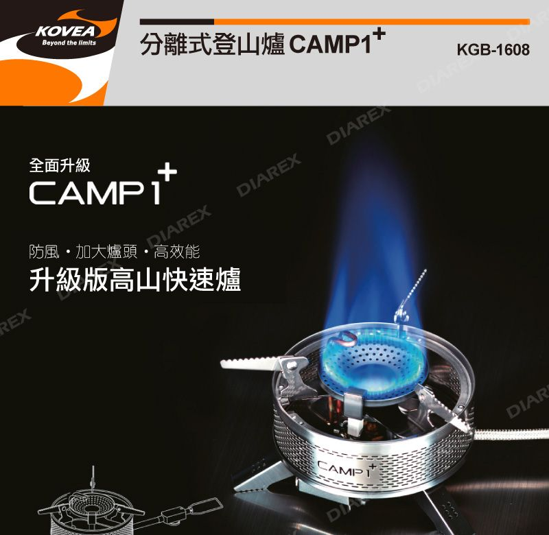
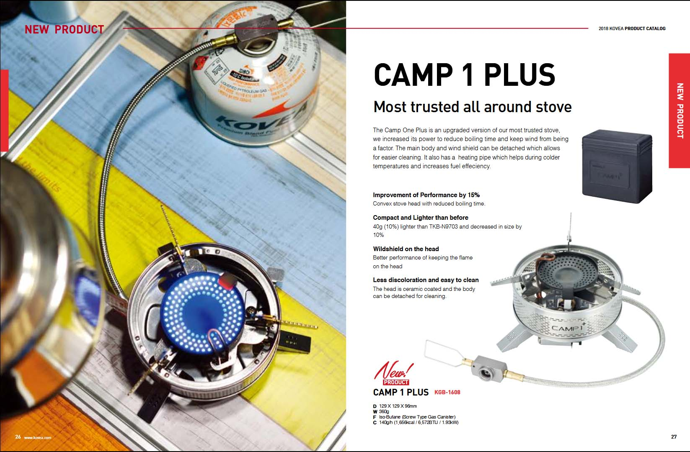
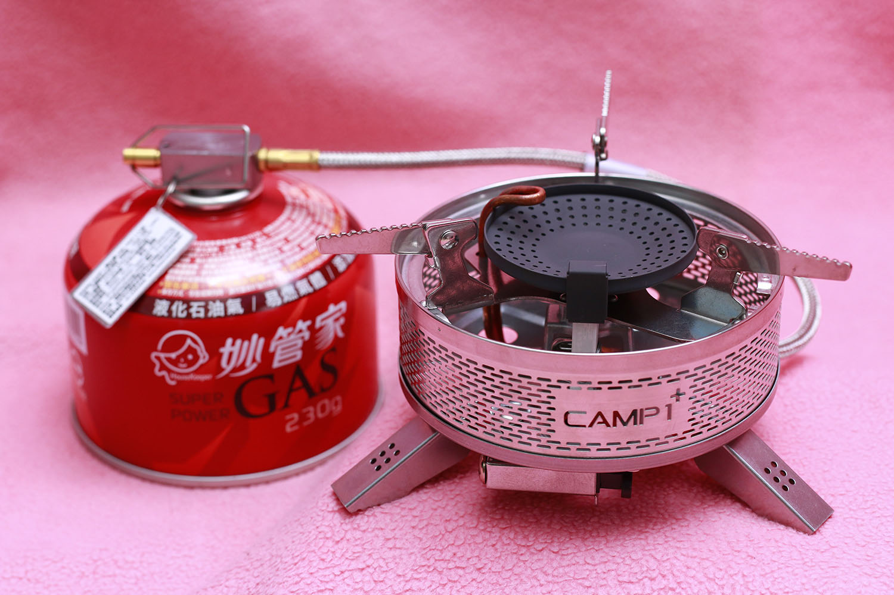
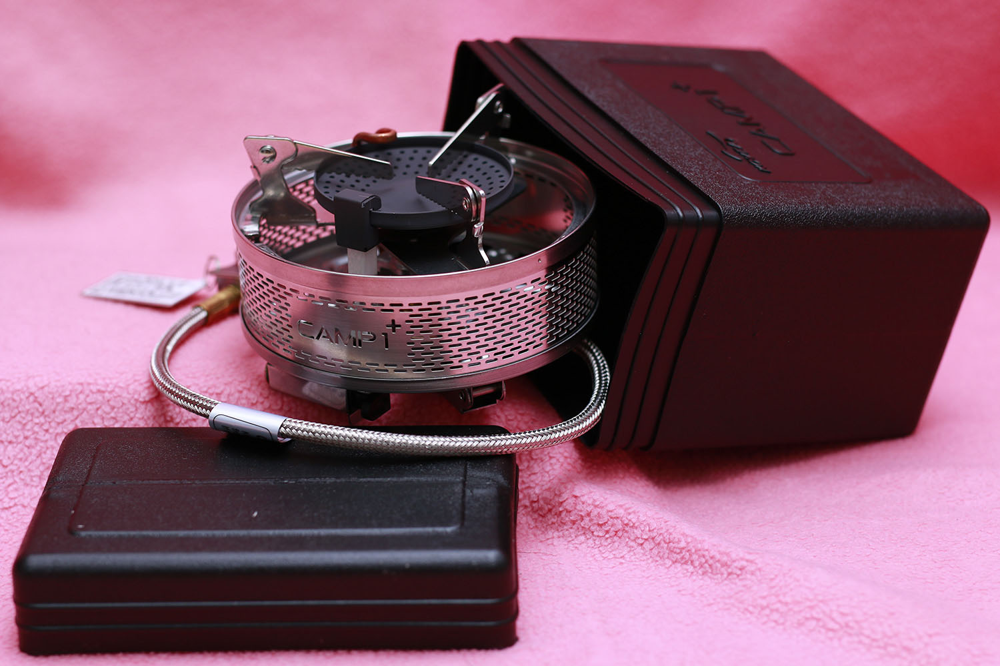
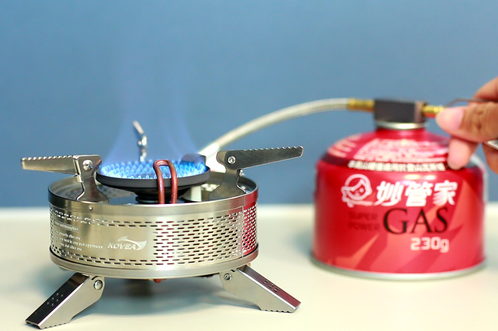
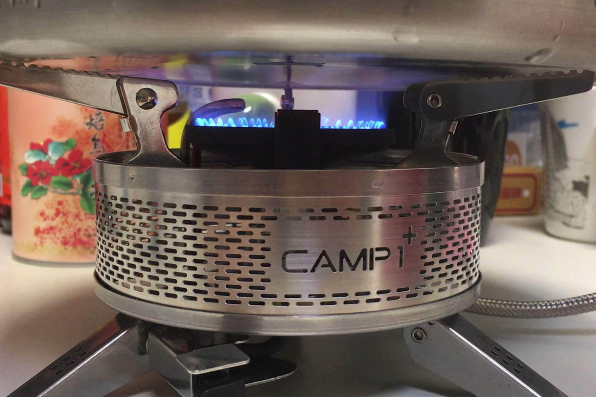
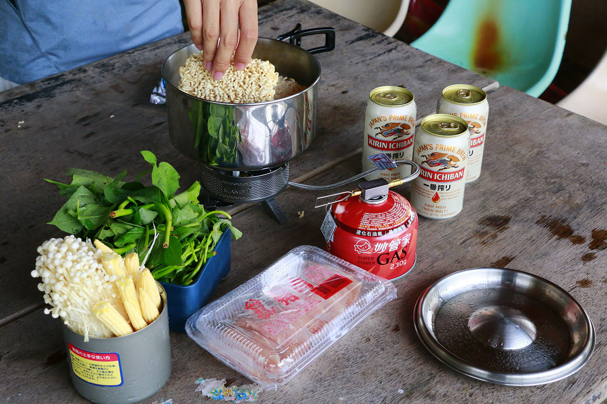
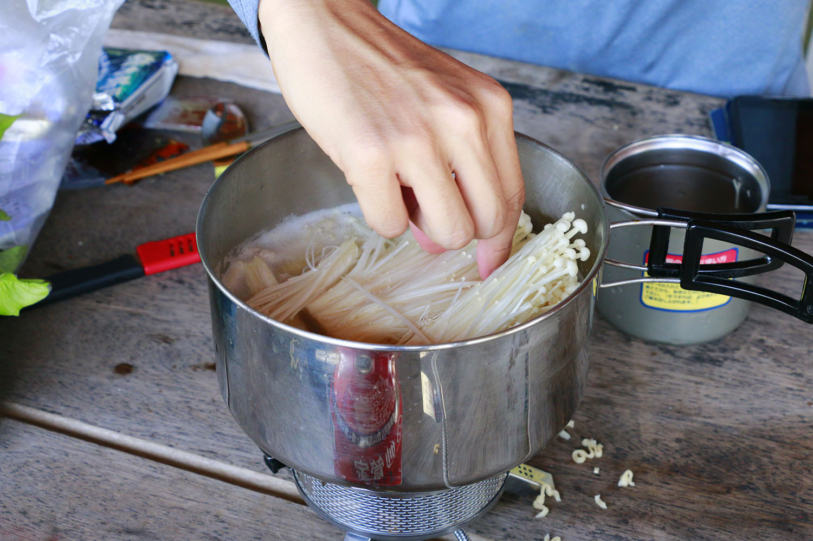
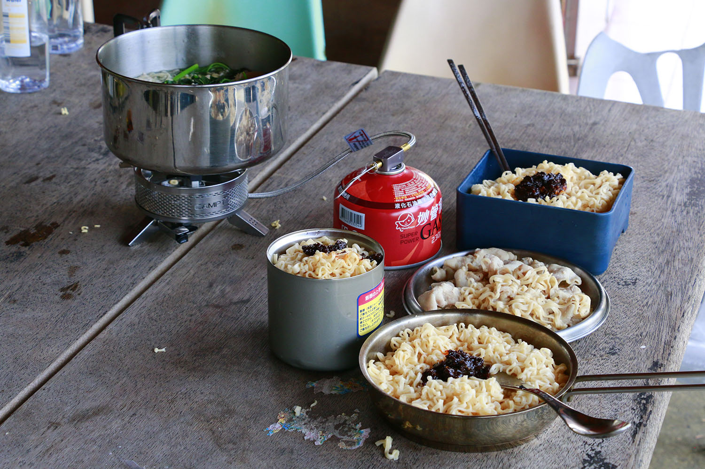
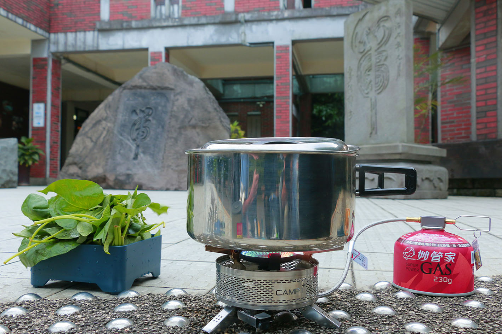

▲ KOVEA CAMP 1 PLUS 登山爐（圖片取自妙管家）
KOVEA 是創立於西元 1982 年的韓國戶外品牌，目前由達雅企業（妙管家的母公司）代理進口在台銷售。老實說，KOVEA 在台灣還真是不太有名氣，至少在登山爐這個產品上，我尋遍了各家網站，發現 KOVEA 在台灣的通路和使用者真的是不多。不過從他們公司的簡介以及國外的評測來看，這個品牌在國外頗為知名，受到全世界戶外人士的喜愛。
本次登山爐實測的時空背景是「淡蘭古道北路」，嚴格說起來應該是兩個地點：福隆土地公廟以及大里遊客中心。
其實這趟去淡蘭古道，是自己跟朋友私下約好的行程，後來健行筆記小編詢問我有沒有興趣順便測試登山爐，我想想覺得有趣便答應了下來。事實上我已經很久沒有使用登山爐了，之前用的也不是自己的爐，所以這次實測對我來說，可以當成是一個重新認識的過程，用新手使用者的視角來體驗。我認為產品對於消費者而言，最重要的就是「經驗」和「證據」，而這正是我想在這篇文章裡跟大家分享的事情。
關於登山爐具的知識，可以參考花蓮縣山岳協會鄧本民先生的文章，裡頭有非常詳盡的介紹。
【器材概覽】
KOVEA CAMP 1 PLUS 登山爐
關於爐具的規格，2018 年 KOVEA 產品型錄上所登載的、盒裝上註明的、以及盒內中文說明書所紀錄的數據都不盡相同，尺寸和重量我自己親自量了一遍，燃氣消耗速率的部分，則是直接寄信詢問達雅企業，得知中文說明書及標示為台灣經濟部標準檢驗局實驗的結果，結果如下：
● 爐具收合尺寸（公分）：11.4（直徑）、7.6（高）
● 收納盒尺寸（公分）：13.7（長）、8.8（寬）、14.0（高）
● 重量：360 公克重（不包含收納盒）
● 燃氣消耗速率：最高每小時 160 公克
達雅企業指出，規格的差異可能源自於韓國與台灣不同的地理和氣候因素，因此在台灣使用此產品時，應以標檢局數據為準。

▲ 2018 年 KOVEA 產品型錄 CAMP 1 PLUS 登山爐
CAMP 1 PLUS 並不是一個主打極度輕量化的登山爐，縱然它號稱比前一代的產品減輕了 40 公克，但它的目標是烹煮四到六人份的餐食，結構的穩定性仍然是首要考量，因此除了爐頭本身，CAMP 1 PLUS 的結構還包含了底座（底盤和爐腳）、點火器、環型遮罩和鍋架，爐頭的尺寸也較大（直徑 6.2 公分）。
爐腳能夠讓登山爐站立地更加穩固，點火器可以拉出來以方便點火，而環型遮罩則是可拆卸的，這點讓使用者可以很方便清潔滴落爐具的油漬，保持爐具的乾淨與衛生。

▲ CAMP 1 PLUS 登山爐使用姿態
此外，CAMP 1 PLUS 的爐腳和鍋架都可以收折起來，放進兩人份的小鍋子裡綽綽有餘，它也擁有專屬的塑膠收納盒，重量相當輕巧，對於登山爐也能夠給予良好的保護。不過圓形的爐放到方形的盒子裡，勢必會浪費許多空間，這點倒是有些可惜。

▲ CAMP 1 PLUS 登山爐收納狀態
功能的部分，CAMP 1 PLUS 主打的特色有以下三點：
● 輸出功率高（火很旺）
● 燃燒效率高（省瓦斯）
● 傳遞效率高（損耗低）
盒裝上的中文標示所登載的輸出功率為 2.20 千瓦，不過這是個很粗略的數據，也與所使用的瓦斯罐有關，但我們還是可以大概理解一下這個數字是什麼概念，那就是將 1 公升的水從攝氏 30 度煮到 100 度，只需要花費大約 2 分 15 秒的時間，其實是個滿驚人的加熱效率。
輸出功率 2.20 千瓦是理論計算出來的數值，登山爐實際上的輸出功率會低於理論預測，最主要的原因是不完全燃燒。當瓦斯不完全燃燒的時候，所放出來的熱量就會比完全燃燒時還要少，換句話說，就是得消耗更多瓦斯來達到一樣的加熱效果。這樣的情況通常當瓦斯處於低溫狀態時更加嚴重，為了改善這個問題，CAMP 1 PLUS 在進氣管線中設計了預熱管，使得瓦斯在燃燒之前，先通過爐頭加熱，藉此來提高燃燒效率。
當然 2.20 千瓦的輸出功率不會 100% 被用來煮水，比方說周圍的空氣和物體也被加熱了，ˋ這就是所謂逸散的熱，稱為「損耗」。CAMP 1 PLUS 缽形的爐頭設計，正是為了減少損耗的發生，缽形爐頭能夠讓熱能（火力）更集中，同時阻絕空氣流動（風）對燃燒的影響。
妙管家 HKCG-230 高山罐
這次搭配使用的瓦斯罐是「妙管家高山罐（HKCG-230）」，它的規格如下：
● 尺寸（公分）：11.0（直徑）、9.2（高）
● 滿瓶重量：367 公克重
● 燃料重量：250 公克重
● 燃料成份：如下表所示，資料來源為妙管家
| 成份 | 重量百分比 | 燃燒熱（千卡每克） |
|---|---|---|
| 異丁烷 | 65.96% | 11.864 |
| 丙烷 | 21.83% | 11.975 |
| 丁烷 | 11.53% | 11.790 |
| 丁二烯 | 0.68% | 11.185 |
▲ 妙管家高山瓦斯罐 HKCG-230 低溫測試

▲ CAMP 1 PLUS 火力微開的狀態
首先，由於 CAMP 1 PLUS 的火力比較強，燃燒範圍比較廣，為了使燃燒產生的熱量能夠充足地被鍋體吸收，我選擇的是底部直徑為 19 公分的鍋子，足夠涵蓋最強火力時的燃燒面積，同時由於鍋子的截面積較大，水深較淺，有利於水的對流，從而使整體更接近熱平衡。
加熱的水量則是設定為 1 公升，水量過少會使得鍋體升溫時所需熱量的比例增加，而水量過多時水體不易達成熱平衡，使得水溫判斷出現較大誤差。
在如此設置之下，鍋內的水每上升攝氏 1 度需要吸收 1000 卡，鍋子本身每上升 1 度則需要吸收 37.2 卡。此外，這顆玻璃鍋蓋在溫差攝氏 70 度時的導熱效率是每秒 0.8 卡，因此在加熱過程中吸熱是可以忽略的。（實際上煮完時鍋蓋摸起來仍然溫溫的，溫度並沒有上升太多。）
實際測試的結果，將 1 公升攝氏 30 度的水加熱到 100 度，以最大火力需要花費 2 分 40 秒的時間（攝氏 100 度的水尚未沸騰），根據以上的資訊換算，鍋與水的吸熱功率為 1.90 千瓦，換句話說，CAMP 1 PLUS 的平均燃燒和傳遞效率高達 86.6%，僅僅浪費 13.6% 能源！

▲ 用 CAMP 1 PLUS 煮水測試
場景二：福隆土地公廟（淡蘭古道北路）
● 時間日期：1pm, May 14, 2019
● 天氣條件：攝氏 30 度，氣壓 1010 百帕，相對濕度 85%
● 風向風速：東北風，時速小於 1 公里
● 任務：煮三人份午餐（3 包維力炸醬麵、1 把地瓜葉、10 根玉米筍、16 片豬肉片）
● 鍋具：2.5 公升復合金不銹鋼鍋（350 公克重）、不銹鋼鍋蓋（90 公克重）
真正將 CAMP 1 PLUS 帶來野外用，首先感受到的就是它的便利性。由於 CAMP 1 PLUS 並沒有太多需要拆裝的部件，從收納盒拿出來之後，只需要把爐腳和鍋架展開來，接著裝上瓦斯罐即可使用，以上這些動作一氣呵成不用 30 秒，相當方便。
這一餐我們炊煮所使用的是自己揹的飲用水，溫度恰好就是室溫攝氏 30 度，這次火力沒有全開，但 1 公升的水煮到大滾只花了 4 分鐘，整餐煮下來也只花 20 分鐘就完成了，相當有效率，對比十幾年前悲慘的情景，真的會有一種「當初為什麼要浪費生命」的感覺。



▲ 炊煮澎湃的午餐
CAMP 1 PLUS 在火力和燃料使用效率的表現，到目前為止相信大家已經有目共睹，除此之外，CAMP 1 PLUS 在提升安全性的設計上也是相當用心。
下盤的設計使得 CAMP 1 PLUS 在使用時不會傾倒，爐腳底部為鋸齒狀，更是增加爐具的抓地力，使得使用者在操作時不會滑動，同時，爐架上端的設計也為鋸齒狀，增加和鍋子的摩擦力，鍋子放置在爐具上更穩固，因此可以使用較大的鍋子煮較多食材，即使是四到六人的團體料理也沒有問題。
另一方面，CAMP 1 PLUS 配備 27 公分金屬高壓軟管，瓦斯可以安裝在較安全的距離使用，同時金屬軟管不易因擠壓或碰撞而破裂導致燃料洩漏，對於保養維護及使用安全又多一層保障。
場景三：大里遊客中心（淡蘭古道北路）
● 時間日期：6pm, May 14, 2019
● 天氣條件：攝氏 27 度，氣壓 1008 百帕，相對濕度 85%
● 風向風速：東風，時速 9 公里（二級風）
● 任務：煮三人份晚餐（2 包阿舍關廟麵、2 包統一雞汁麵、1 把地瓜葉）
● 鍋具：2.5 公升復合金不銹鋼鍋（350 公克重）、不銹鋼鍋蓋（90 公克重）
前兩次使用 CAMP 1 PLUS 的時候恰好都沒風，沒有實際感受到它的防風能力，這次在大里遊客中心煮晚餐時，正好開始起風，我們特地選了一個可以持續吹到風的位置煮飯。
時速 9 公里的風，大約就像家用電風扇的感覺，雖然不是很強的風，但對於一般的爐具而言，已經能夠相當程度影響火力。我們在點火的時候刻意不遮蔽，讓風能夠直吹爐頭，發現原本足以點火的排氣量在受風的情況下無法順利點著，必須將閥門轉更開才能順利點燃。不過當火點起來開始炊煮以後，因為燃氣釋放量更大，而且有鍋體遮蔽，相對受到風的影響變得更小。
CAMP 1 PLUS 的防風能力比起前一代產品 CAMP 1 有大幅提升，原因正是 CAMP 1 PLUS 改採用缽型的爐頭設計，保護燃氣口不受到風的影響。
經過實驗，炊煮的火力和無風時比起來並無明顯差異。

▲ 在二級風中煮晚餐
【結論】
CAMP 1 PLUS 登山爐是一款兼具便利性、功能性和耐用性的爐具，雖然重量和體積相對於一般單人登山爐來說比較大，但它能夠炊煮較多食材。CAMP 1 PLUS 適合小團體（例如四到六人）登山或露營時使用，它的火力強大，並且使用瓦斯的效率也很好，操作門檻低，事後清潔相當便利，即便這次我們只有三個人，揹著它上路也不會覺得累贅。
而且在這曬死人的炎熱天氣裡走到肚子咕嚕咕嚕叫，可以很有效率地煮東西吃，真的會讓人心情特別愉快呢！
▲ CAMP 1 PLUS 登山爐戶外實測精華短片
本文同步發表於健行筆記： ● 【爐測】多人野炊、快速開飯！KOVEA 高效能登山爐 X 淡蘭古道野炊實測